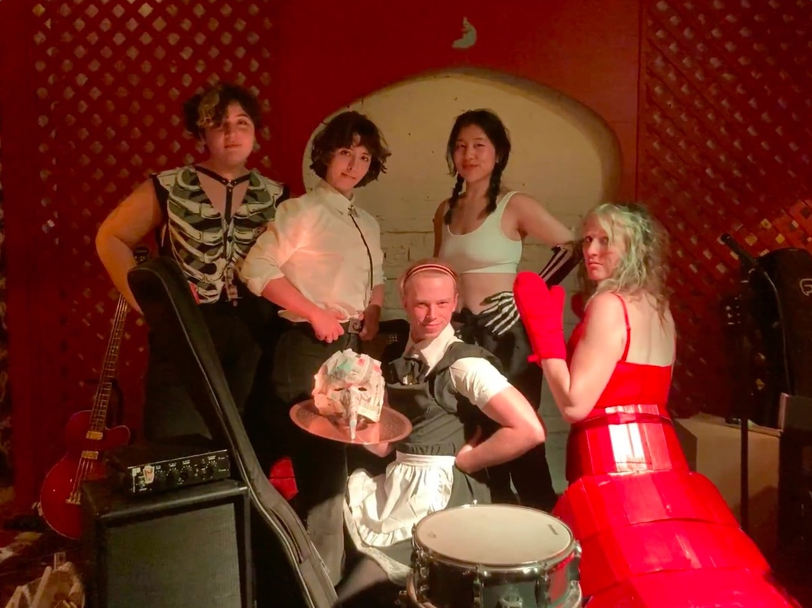
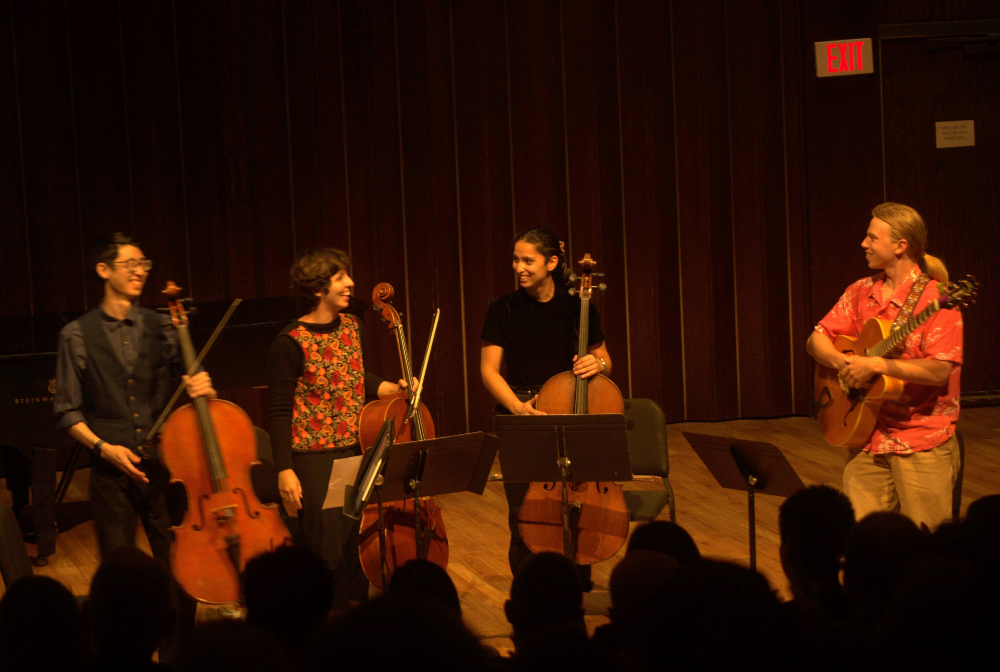

2021-2022
- Began expirementing with multichannel spatialized audio and algorithmic music using Pure Data and Python programming languages.
- Arranged the piano accompaniment of Debussy's Cello Sonata for guitar. Performed the guitar part as part of an MFA recital.
- Did sound design for an exhibition in conjunction with Studio Art MFA students in UCI's xMPL.
- Began work with South Coast Repertory- first as an instrument technician on "Million Dollar Quartet", and then as an A1 on "Nina: Four Women" and "Snow White".
- Gained a working knowledge of Yamaha digital mixing consoles, Dante systems, RF wireless systems, and Qlab.
- Acted as Music Director and Sound Designer for a halloween cabaret show, "The Funk of 40,000 Years".

2023-2024
- Mixed live sound for Dr. Silver at Pacific Playwrite Festival: a mic'ed ensemble of 12 and a 5 piece band.
- Composed original music for Chapman University's production of Brecht's "Mother Courage and Her Children".
Provided Vocal Direction and choreographed live music-making on stage in coordination with props team.
- Performed original guitar and cello arangements of Bach and Satie at the National Cello Institute in Pomona, CA.
- Acted as music director for Chapman University's Production of "Storm in The Barn", contributing new arrangements for a condensed live band on stage.
- Performed in the world premier of Charlie Morrow's "Abraham Abulafia Visits the Pope" on Upright Bass
- Created new arrangements and led a live 7 piece band for a 10th aniversary screening of "Over the Garden Wall"
- Performed on bass as part of Josha Suh's Quartet for a Tribute to John Coltrane's "A Love Supreme"

2025-2026
- Completed two music theory books for strings students. See downloads
- Presented an hour-long recital of original chamber works
- Composed a Jazz String Trio "Squirell in Birdland" (recording coming summer 2026)
- Composed 20 minutes of original music for Anisa Johnsons original dance show